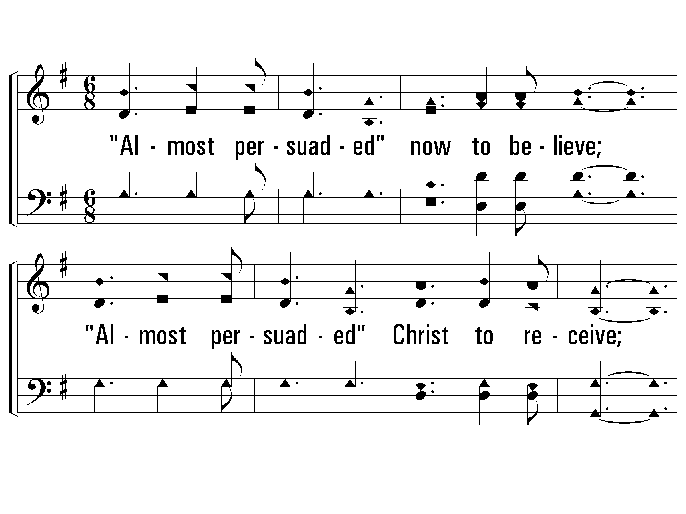
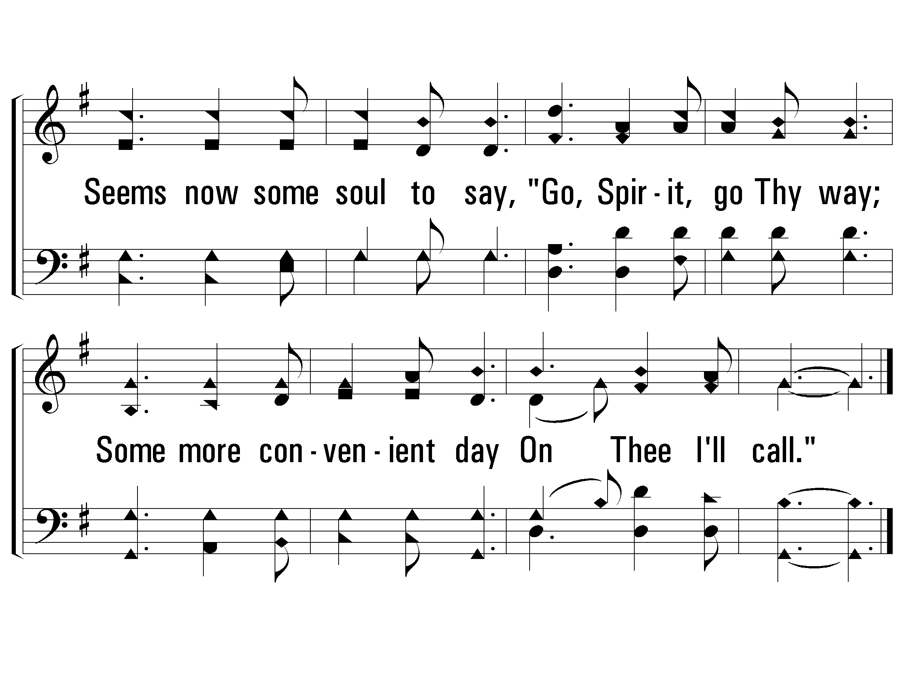
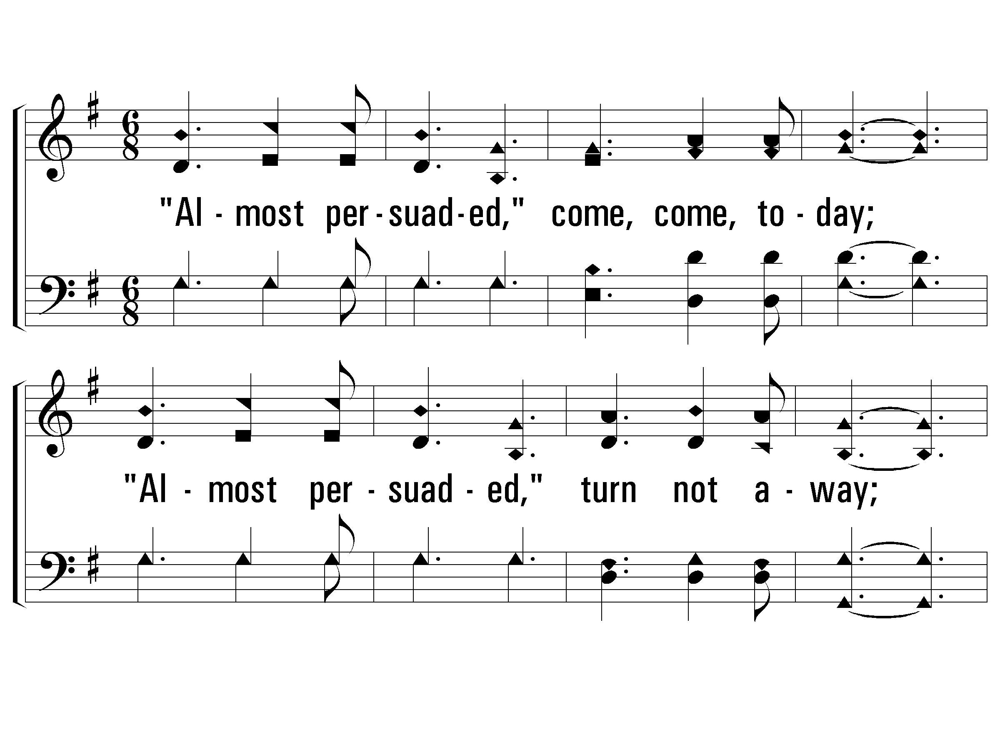
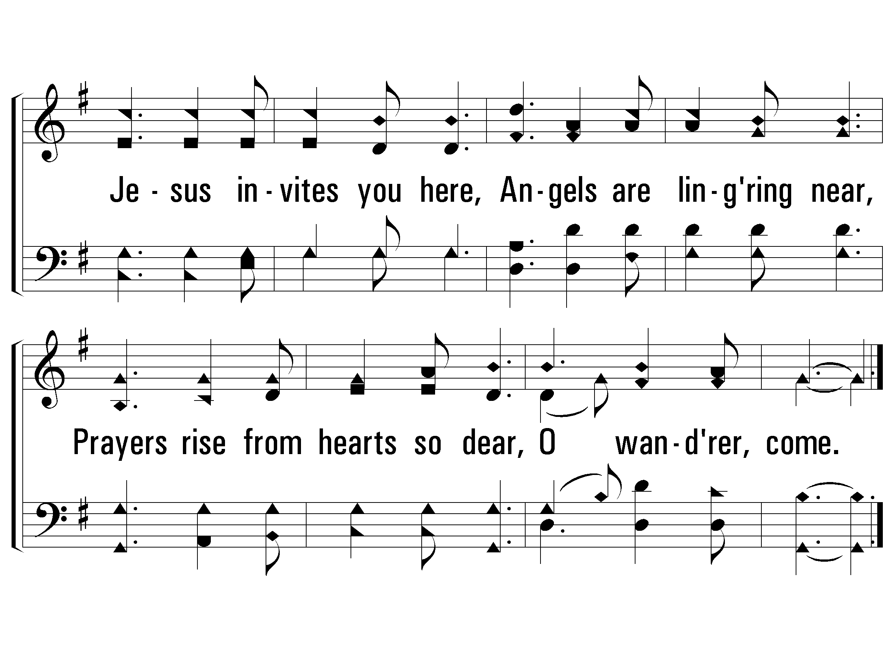
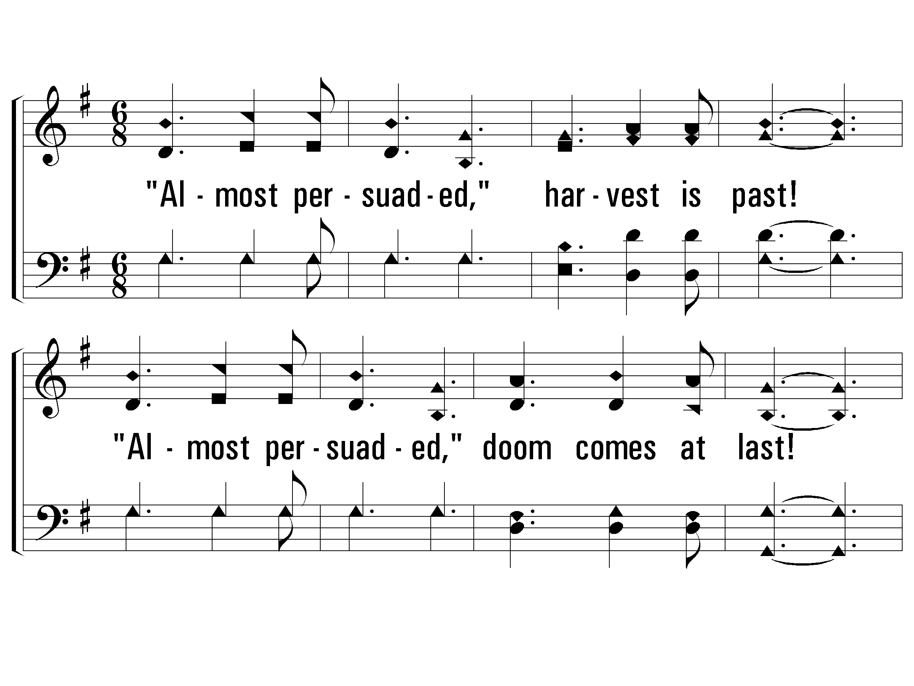
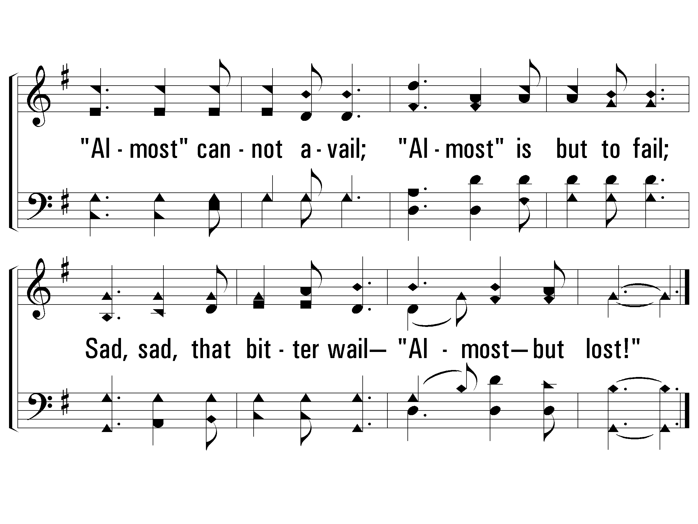

1.
"Almost persuaded" now to believe;
"Almost persuaded" Christ to receive;
Seems now some soul to say,
"Go, Spirit, go Thy way;
Some more convenient day
On Thee I'll call."

1 - Almost Persuaded
Words & Music: Philip P. Bliss
Praise Press
31

1 - Almost Persuaded
Praise Press
31
2.
"Almost persuaded," come, come, today;
"Almost persuaded," turn not away;
Jesus invites you here,
Angels are lingering near,
Prayers rise from hearts so dear,
O wanderer, come.

2 - Almost Persuaded
Words & Music: Philip P. Bliss
Praise Press
31

2 - Almost Persuaded
Praise Press
31
3.
"Almost persuaded," harvest is past!
"Almost persuaded," doom comes at last!
"Almost" cannot avail;
"Almost" is but to fail;
Sad, sad, that bitter wail—
"Almost— but lost!"

3 - Almost Persuaded
Words & Music: Philip P. Bliss
Praise Press
31

3 - Almost Persuaded
Praise Press
31